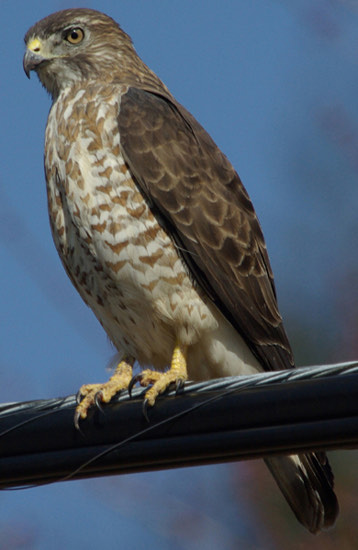

Broad-winged Hawk
Buteo platypterus
- Kind
- bird
- Native to Vermont
- yes
- Legal status
- State rank S4B; the Atlas page lists no SGCN or other label and no current recommendations. Federal law: the Migratory Bird Treaty Act (see Legal status). (checked 2026-10-31)
Listen
Call: a 25-second clip, cut from a 32-second recording (trimmed, with a short fade-out, and saved as a small MP3), so it plays without an internet connection. Recording by Jonathon Jongsma, CC BY-SA 4.0, on Wikimedia Commons, where the whole recording is (an internet connection is needed to open it).
Pictures

Names
Broad-winged Hawk, Buteo platypterus.
Range and habitat
The Atlas profile says it breeds in large, unbroken forest blocks and is scarcest in the agricultural Champlain Valley; the nest is often in the main crotch of a birch or other deciduous canopy tree. Possible threats it names are habitat loss, shooting and pesticides on the wintering grounds, and forest loss to development in Vermont. Audubon lists deciduous or mixed forest, often near water and clearings or edges.
How to identify (by season; look-alikes and the key difference)
- Size: 13 to 17 inches long (33 to 44 cm), wingspan 2 feet 8 inches to 3 feet 3 inches; about the size of a crow (Audubon).
- Marks: a dark back and a reddish chest with broad tail-bands in adults; juveniles have narrower bands, the last one thicker, and dark blotches on the sides of a white chest. It soars with its wings held flat and tapering to a point.
- Voice: a thin whistle, "pe-heeeeeeeee?", which Blue Jays are known to mimic.
Through the year
Dates are typical for Vermont and shift with elevation and year; "approximate" means the source gave a season and the dates are a translation of it.
| When | What | Look for | What to do | Dates |
|---|---|---|---|---|
| Apr 1 to Jun 30 | nesting (avoid) | Raptor nesting season, typically April through June (the Landowner's Guide, as recorded in the Barred Owl note, for forest hawks and owls): avoid timber harvest within a buffer of the nest tree equal to or greater than the height of the tallest tree within 20 feet of the nest, and avoid large openings within 300 feet. | - | stated |
| Apr 15 to May 15 | migration (watch) | Broad-winged Hawks move north through Vermont beginning in mid-April (the Atlas, citing Fichtel 1985). | - | approximate |
| May 16 to Aug 1 | nesting (watch) | A secretive, solitary nester. Vermont records: nests with young 16 May to 18 July (10 nests), nest building 2 June to 1 August (3 nests; later dates may be green sprigs added to an active nest). Nest building can take a month, incubation of the 2 to 3 eggs takes 4 weeks, the young fledge 5 to 6 weeks after hatching and may stay near the nest up to 8 weeks. | - | stated |
Role and management
Audubon lists small mammals, amphibians, reptiles, small birds and large insects; the Atlas says it may sit quietly in the lower canopy or at the edge of a woodland road and wait for chipmunks, mice, garter snakes, American toads, young birds or even insects. The third calendar line comes from the Landowner's Guide as recorded in the Barred Owl note; it was written for forest hawks and owls in general.
What helps it thrive (light, soil, shelter, food and the trees it uses)
- Large, undisturbed forest with big trees. The Guide's advice for forest hawks and owls is recorded in Barred Owl: protect large stick nests and cavity trees with a buffer during timber harvest, avoid cutting in the buffer during the nesting season (typically April through June), and designate one or more trees 12 inches across or larger per acre as wildlife trees.
- Prey and hunting ground: these birds eat small mammals, birds, amphibians and reptiles (Audubon and the Atlas, as recorded in the note), an inference, not a source's advice, is that a mosaic of field, forest edge and wetland that keeps those prey animals supports them. The Barred Owl species page notes owls are drawn to grassy roadsides where rodents live and many die in vehicle collisions.
Legal status
Native birds are covered by the federal Migratory Bird Treaty Act, which prohibits taking (killing, capturing, selling, trading and transport are named) protected migratory birds without prior authorization (U.S. Fish and Wildlife Service page, read through a summarizing fetch 2026-10-31). The Act applies to native species named in the treaties (50 CFR 10.13); that list was not checked for this species, and the page read says nothing about nests or about cutting trees in nesting season. Ask the county forester or the Fish and Wildlife Service before work near an active nest.
Sources
- Vermont Center for Ecostudies, Vermont Breeding Bird Atlas, Broad-winged Hawk species profile: http://val.vtecostudies.org/projects/vermont-breeding-bird-atlas/broad-winged-hawk/ (read through a summarizing fetch 2026-10-31)
- Vermont Center for Ecostudies, The Second Vermont Breeding Bird Atlas (2003-2007), Broad-winged Hawk species account (two pages; read as text 2026-10-31): https://media.vtecostudies.org/wp-content/uploads/2026/08/03141732/Broad_winged_Hawk_vbba2.pdf
- National Audubon Society, Guide to North American Birds, Broad-winged Hawk: https://www.audubon.org/field-guide/bird/broad-winged-hawk (read through a summarizing fetch 2026-10-31)
- U.S. Fish and Wildlife Service, Migratory Bird Treaty Act of 1918: https://www.fws.gov/law/migratory-bird-treaty-act-1918 (read through a summarizing fetch 2026-10-31)
What this page is based on
Kind of source: mixed (the Vermont Breeding Bird Atlas profile and second-atlas account, Vermont Center for Ecostudies; Audubon's field guide, secondary)
What was read: The Vermont Breeding Bird Atlas species profile (read through a summarizing fetch) and the second Atlas species account (a two-page PDF read as text), both from the Vermont Center for Ecostudies, and the Audubon field guide page (summarizing fetch), all on 2026-10-31. Atlas dates are the earliest and latest records of each stage in Vermont during 2003-2007 (so they are stated, not translated); the Atlas pages do not define the state-rank labels. The U.S. Fish and Wildlife Service Migratory Bird Treaty Act page was read the same way. Pictures: the Wikimedia Commons description and the photo itself were looked at.
Last checked: 2026-10-31
Vermont Woodland Owner's Reference, built 2026-11-09. Rules and dates here are summaries, not legal advice; dates shift with elevation and year. Photo and recording credits · Note: _reference/US-VT/Species/Broad-winged Hawk.md